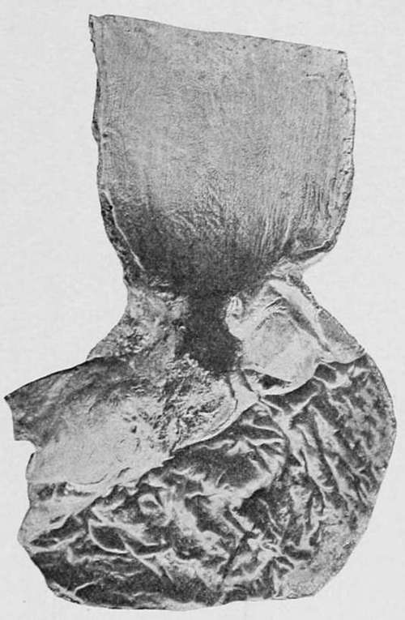
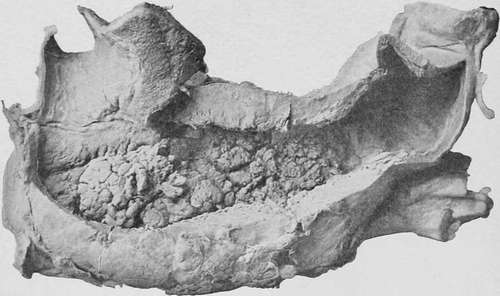
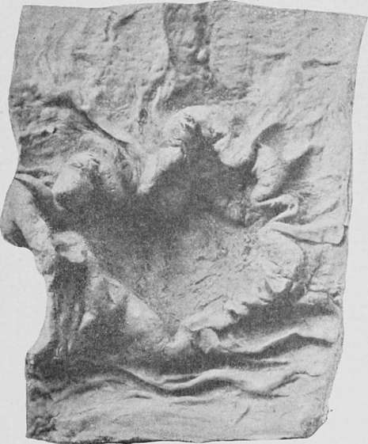
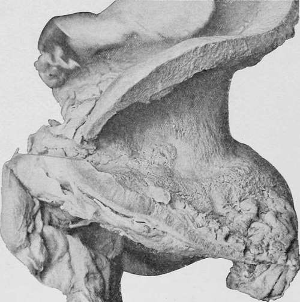

Medullary Carcinoma (Soft Spheroidal-Celled Cancer)
Description
This section is from the book "Cancer And Other Tumours Of The Stomach", by Samuel Fenwick. Also available from Amazon: Cancer and other tumours of the stomach.
Medullary Carcinoma (Soft Spheroidal-Celled Cancer)
This variety of the disease is characterised by an exuberant soft growth, which infiltrates all the coats of the stomach and is usually attended by extensive ulceration. As a rule it commences in the pyloric half of the organ, near the lesser curvature, where it forms either an irregular flattened tumour, which is slightly raised above the adjacent mucous membrane, or a large cauliflower mass surrounded by several smaller tumours or dendritic growths. The tissue of which it is composed is of soft consistence, dead-white, greyish white, or pale pink in colour, and yields an abundant milky juice when scraped with a knife. Owing to its general resemblance to brain substance, this variety of cancer was formerly termed ' encephaloid.'
(a) The disease may be strictly circumscribed and occupy a surface several inches square, or it may be elongated and extend for some distance in the long axis of the organ ; while occasionally the whole of the inner surface of the stomach is covered with a cauliflower growth, which almost obliterates the cavity and encroaches some distance upon the oesophagus.
Fig. 7.-Soft ulcerating growth of spheroidal-celled carcinoma situated at the cardiac orifice and spreading into the oesophagus. (London Hospital Museum.).
After the tumour has attained a certain stage of development it is prone to undergo degenerative changes, which greatly alter its appearance. In most cases interstitial haemorrhages take place, which give a section a mottled red or yellow colour, and its superficial aspect a brownish-black tint. In other instances the cellular elements are affected by fatty and molecular changes, which produce softening of the tissue and disintegration of the tumour. Both conditions tend to reduce the bulk of the growth and to produce ulceration, so that at a necropsy it is rare to find the fungating mass intact. On the contrary, there usually exists a bowl-shaped or crater-like depression in the centre of the tumour, the edges of which are elevated, irregular, and somewhat overhanging; the sides ragged, sloughy, or fungating; while the base varies according as it is formed by tumour substance or by the smooth muscular or peritoneal coat of the stomach. When two or more ulcers are present, they may coalesce and form one deep cavity with a serpiginous overhanging edge.
Fig. 8.-Stomach viewed from behind, showing enormous infiltration of its walls with soft spheroidal-celled carcinoma, and its cavity almost obliterated by a cauliflower growth. (London Hospital Museum.).
(b) It sometimes happens that the entire growth sloughs away, and merely leaves an ulcerated condition of the mucous membrane to mark its former site. Such an ulcer usually presents elevated, irregular, and everted edges, and a ragged or papillomatous base ; but occasionally it undergoes a further retrograde change, whereby the edges become hard, smooth, and sloping, and the base clean and fibrous in appearance. In this way a soft medullary excrescence ultimately gives place to an ulcer which closely resembles a primary scirrhus, and may even undergo partial cicatrisation. This structural metamorphosis has been described as ' spontaneous healing of cancer ; ' but the expression is a delusive one, since even in those rare cases where the ulcer heals superficially active growth still continues in the base of the disease, and ultimately leads to secondary deposits in the lymphatic glands and other neighbouring tissues.
(c) Medullary carcinoma also occurs in the form of a diffuse infiltration of the walls of the stomach, which may either affect the greater part of the organ or be limited to its pyloric half. In this condition the submucous tissue is greatly thickened, and the mucous membrane is thrown into firm folds that look like hypertrophied rugae, or presents numerous thick wheals which run parallel to the long axis of the viscus. Here and there superficial ulcers with ragged walls and fungating bases may be observed, or the surface may be studded with nodules, some of which exhibit deep sloughing cavities. Where the disease is most advanced the muscular coat is also infiltrated and its contractile tissue destroyed; but elsewhere, and especially in the neighbourhood of the fundus, it is often thickened from hypertrophy. The peritoneum is condensed and opaque, and is not infrequently studded with numerous nodules of new growth.
Fig. 9.-Malignant ulcer of the stomach. (Museum of the Royal College of Surgeons.).
Fig. 10. - Enormous infiltration of the pyloric half of the stomach by soft spheroidal-cell carcinoma, with ulcerating nodules upon the inner surface. (London Hospital Museum.).
Continue to:
- prev: Scirrhus (Hard Spheroidal-Celled Carcinoma)
- Table of Contents
- next: Adenocarcinoma (Cylindrical-Celled Carcinoma)